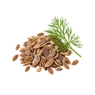

होम / सुआ

सुआ का भाव आज | Dill Mandi Price Today
सुआ के आज के उपलब्ध मंडी भाव देखें—उंझा के मॉडल, न्यूनतम और अधिकतम रेट।
नीचे मंडी-वार सूची में सुआ के उपलब्ध भाव दिए हैं। मंडी के नाम पर क्लिक करके उस मंडी की दूसरी फसलों के भाव भी देख सकते हैं।
सुआ का भाव कैसे देखें और रेट किन बातों से बदलता है
सुआ एक सुगंधित बीज वाली फसल है, जिसका उपयोग मसाले के रूप में होता है। इसे हरी सुआ पत्ती से अलग समझना जरूरी है, क्योंकि दोनों की बिक्री का रूप और भाव की इकाई अलग हो सकती है।
आज का सुआ भाव कैसे देखें
इस पेज की मंडी-वार तालिका में न्यूनतम, मॉडल और अधिकतम भाव देखें। अपनी नज़दीकी मंडी तथा उपलब्ध दूसरी मंडियों के भाव की तुलना करके फैसला लेना अधिक उपयोगी रहता है।
- अपनी मंडी या राज्य चुनकर भाव देखें।
- न्यूनतम, मॉडल और अधिकतम भाव में अंतर समझें।
- पुराने और नए उपलब्ध रिकॉर्ड में फर्क देखकर निर्णय लें।
गुणवत्ता और ग्रेड का असर
सुआ के सूखे बीज में दाने की सफाई, एकरूपता, खुशबू, नमी और दूसरे बीजों या धूल की मिलावट बोली पर असर डाल सकती है। साफ और अच्छी तरह सूखा हुआ लॉट अलग गुणवत्ता में माना जाता है।
आवक, मांग और बाजार
मौसमी आवक, स्थानीय मसाला कारोबार और उपलब्ध स्टॉक के कारण सुआ के भाव में मंडी-वार अंतर हो सकता है। उपलब्ध रिकॉर्ड आने पर मॉडल भाव के साथ न्यूनतम और अधिकतम रेट की तुलना करना उपयोगी रहेगा।
सुआ बेचने या खरीदने से पहले ध्यान रखें
- सुआ और सुआ पत्ती के भाव को एक-दूसरे से न मिलाएं।
- बिक्री से पहले दाने की नमी, सफाई और मिलावट अलग से जांचें।
- एक ही रेट के बजाय उपलब्ध मंडियों के मॉडल भाव और रिकॉर्ड की तारीख देखें।
अक्सर पूछे जाने वाले सवाल
सुआ और सुआ पत्ती में क्या अंतर है?
सुआ सूखे बीज वाली मसाला फसल है, जबकि सुआ पत्ती उसी पौधे की ताजी हरी पत्तियां हैं। दोनों की बिक्री का रूप, उपयोग और भाव अलग-अलग समझें।
सुआ का भाव किस इकाई में देखें?
सुआ सूखे बीज के रूप में दर्ज हो तो उसका भाव प्रति क्विंटल देखना उचित है। उपलब्ध मंडी रिकॉर्ड में न्यूनतम, मॉडल और अधिकतम रेट साथ में मिलेंगे।
सुआ के भाव में कौन-सी बातें फर्क डालती हैं?
दाने की सफाई, नमी, खुशबू, एकरूपता, स्थानीय आवक और खरीदारों की मांग के अनुसार सुआ के अलग-अलग लॉट का भाव बदल सकता है।